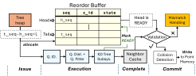

LOOK-AHEAD PLANNING ENGINE · ORIGINAL FIG. 9

A per-tree reorder buffer separates early computation from committed updates.
LOOK-AHEAD PLANNING ENGINE · ORIGINAL FIG. 9

RELATED WORK · MICRO 2026
FMT* multi-tree expansion plus speculative look-ahead.
Keep sequential FMT* semantics through in-order commit and mismatch recovery.
DESIGN LESSON
Parallelize computation.
Preserve planning correctness.
Independent related system; integration with ReCA is not evaluated.
Source: Liu et al., Arborist: Algorithm-Hardware Co-Design for Fast and Efficient Motion Planning (2026), §§III, IV-D; Fig. 9.